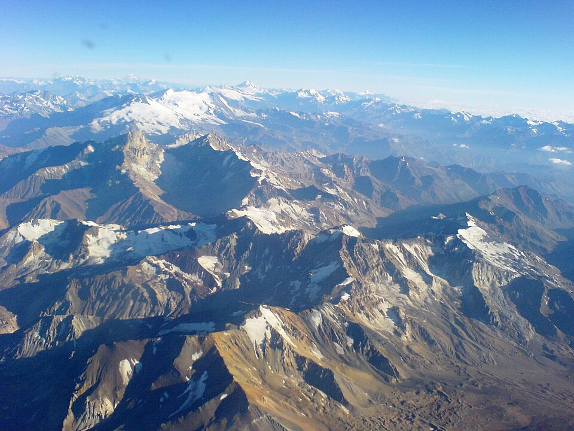
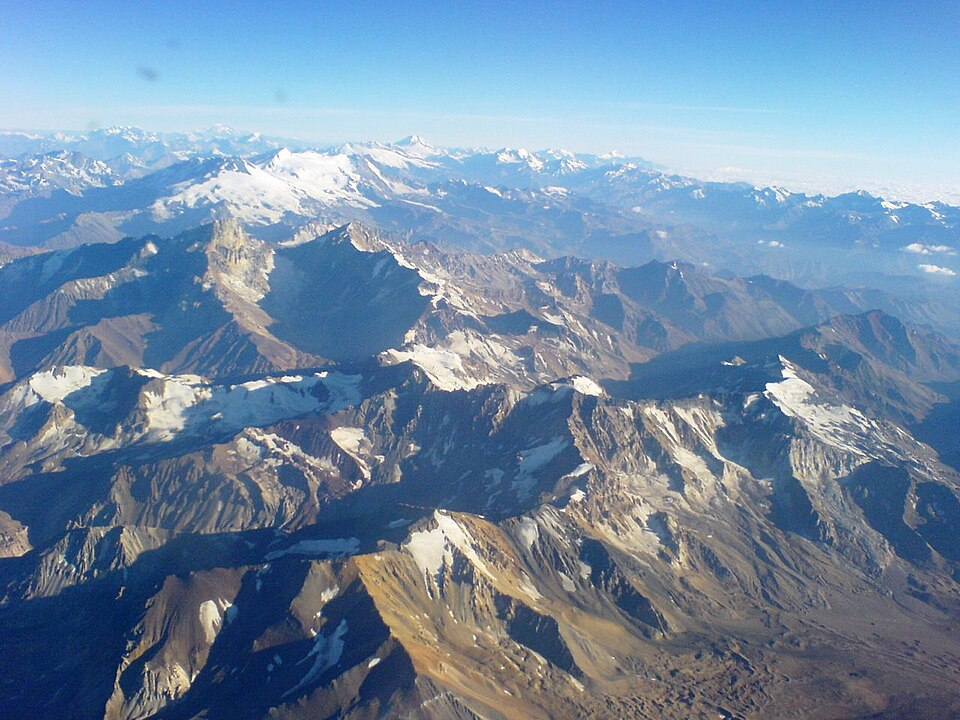

Aos pés da cordilheira dos Andes, a Patagônia é cortada por picos gelados, montanhas, glaciares, rios e lagos
paradisíacos.
Sua fauna e flora distintas também são uma atração à parte: lobos e
elefantes-marinhos, guacos, emas, pumas, raposas, pinguins e baleias dividem terras e águas, tornando esse lugar
único.
A cordilheira dos Andes é uma vasta cadeia montanhosa formada por um sistema contínuo de montanhas ao longo da
costa ocidental da América do Sul,
tendo a sua formação geológica datada no período Terciário. A cordilheira
possui aproximadamente oito mil quilômetros de extensão.
Linda, glamourosa e exuberante, a região dos Alpes é o roteiro de viagem de milhares de turistas do mundo
inteiro. Formados pelas Cordilheiras da Europa,
as montanhas cobertas de neve mais famosas estão na Suíça
abrangem quase todas as montanhas mais altas dos Alpes,
como o Dufourspitze (4.634 m), o Dom (4.545 m), o
Liskamm (4.527 m), o Weisshorn (4.506 m) e o Matterhorn (4.478 m).